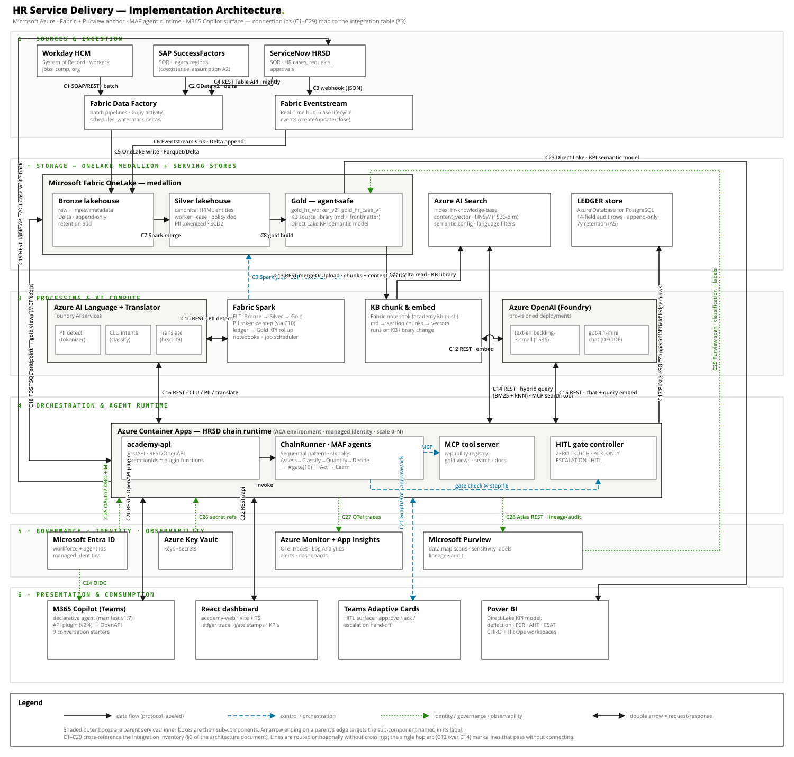

Module goal: students leave able to design, run, extend, and surface an agentic scenario chain — grounded, gated, ledgered, KPI-attributed — and to integrate HR processes into M365 Copilot via a declarative agent.
| Format | Duration | Prereqs | Materials |
|---|---|---|---|
| Instructor-led, hands-on | 1 day (6.5h teaching + labs) or 2 half-days | Python basics, REST familiarity; no Azure account required for labs 0–6 | Repo: github.com/KevenWMarkham/ai-academy · this deck · student deck |
pytest -q yourself on the podium machine
the night before: 54 tests green = the demos will work.
| Block | Content | Time | Student labs |
|---|---|---|---|
| 1 | The core idea: chains, not chatbots | 30m | Lab 0 setup |
| 2 | The canonical 24-step chain · six-role runtime · HITL gate | 60m | Lab 1 trace |
| 3 | Personas → KPIs · the 9 HRSD scenarios | 45m | Lab 2 grounding, Lab 3 gates |
| 4 | Implementation architecture (this deck §7–§10) | 60m | — |
| 5 | Knowledge base · vector search · Azure AI Search | 45m | Lab 4 KB |
| 6 | Running the platform: dashboard + API | 30m | Labs 5–6 |
| 7 | M365 Copilot integration · dual-tenant lifecycle | 60m | Lab 7 package & sideload |
| 8 | Capstone briefing: ship hr-hrsd-10 | 20m | Capstone (homework/day 2) |
Business objective → Use case → Persona → Scenario chain → KPI moved
"cut HR ticket load" policy Q&A Raj (employee) Assess→Classify→ ticket deflection
Sofia (HR Ops) Quantify→Decide→ 0% → 55%
★HITL(16)→Act→Learn
An AI service that answers a question is a demo. A scenario chain is a production system: agents in named roles, on governed data, gated by a human where it matters, leaving evidence at every step, rolling up to a KPI a named persona owns.
If you cannot fill all five slots of the line above, the scenario is not ready to build. That sentence is the course's thesis — return to it in every block.
academy run hr-hrsd-01 on the podium machine, full-screen terminal. Don't explain
anything yet — just let them see the trace: steps 11→18, a gate, an answer with a citation, a
KPI table. "By 10am you'll be able to read every line of this."
| Wave | Steps | What it is | Who pays |
|---|---|---|---|
| W1 Foundation | 1–10 | Planes built once per enterprise: SOR links, Real-Time hub, Bronze/Silver/Gold, PII tokenizer, MCP registry, Entra identities, LEDGER, HITL surface | Platform investment |
| W2 Pilot | 11–18 | One scenario end-to-end: trigger → orchestrator → decision agents → ★gate(16) → act → KPI rollup | The first use case |
| W3 Scale & fuse | 19–24 | Multi-tenant scale, fusing adjacent/cross-practice scenarios, Purview at scale, LEDGER feedback (23 = Learn), enterprise KPI | Run-rate durable value |
Scenarios specialize titles and purposes but keep 1..24 and exactly one enforceable HITL gate at step 16. The academy runtime executes the W2 segment; W1 exists as the synthetic data layer, W3 as documented context.
academy chain live — the printout marks which steps the academy executes.
The key teaching beat: "when a chain feels easy, it's because W1 already paid the hard
costs." ASSESS reads one clean scoped record in one call only because Bronze→Silver→Gold
did the work upstream. This lands harder after the architecture block; plant it now.
ASSESS(13) → CLASSIFY(14) → QUANTIFY(15) → DECIDE(16) → ★ HITL gate(16) → ACT(17) → LEARN(23)
Every executed step writes one 14-field LEDGER row: run_id, seq, timestamp, scenario_id, step, stage, agent, persona, action, detail, confidence, hitl_mode, actor, outcome. If a step didn't write a row, it didn't happen.
packages/academy-core/src/academy_core/runtime.py on screen — ~200 lines.
Point at _gate(): ACT is structurally unreachable without an approved gate;
the runtime guarantees it, not the scenario author. That's the governance answer clients ask for.
Frequent question: "why exactly one gate?" — zero gates = unaccountable; five gates = the humans
become the bottleneck the chain was built to remove. The mode, not the count, carries the risk dial.
| ID | Scenario | Gate |
|---|---|---|
| hr-hrsd-01 | Policy Q&A | ZT |
| hr-hrsd-02 | Status lookup | ZT |
| hr-hrsd-03 | KB search | ZT |
| hr-hrsd-04 | Life-event guidance | ZT |
| hr-hrsd-05 | Leave & absence | ZT |
| hr-hrsd-06 | Letter generation | ACK |
| hr-hrsd-07 | Data correction | ACK |
| hr-hrsd-08 | Deflection / routing | ESC |
| hr-hrsd-09 | Multilingual | ZT |
academy run hr-hrsd-08 (garnishment → confidence 0.00 → escalates to
Payroll Operations with context attached), then immediately
academy run hr-hrsd-08 --text "How many PTO days can I carry over?" (resolves
directly). Same scenario, two gate outcomes. Say: "escalation is an outcome, not a failure —
the misroute-rate KPI is moved by routing precisely, not by avoiding humans."

docs/diagrams/hrsd-implementation-architecture.svg
in the browser and zoom). Orientation pass only on this slide — 90 seconds per band, top to
bottom. Solid = data, dashed = control, dotted = identity/governance. Every connection has an
id (C1–C29) that matches §3 of docs/09-implementation-architecture.md —
keep that doc open in a second tab for questions. The next three slides walk the layers.
gold_hr_worker_v2,
gold_hr_case_v1 (scoped views + row-level security), the KB source library,
and the Direct Lake KPI model.content_vector) and the PostgreSQL LEDGER (append-only, 7y).data/employees.json
and data/cases.json ARE gold_hr_worker_v2/gold_hr_case_v1, and data/kb/
is the KB library — students have been using this layer all morning without knowing it.
academy kb pipeline as a
Fabric notebook: reads the Gold KB library (C11), embeds via
text-embedding-3-small (C12), uploads chunks + vectors to AI Search (C13).gpt-4.1-mini chat for the DECIDE polish (C15).academy-api (FastAPI; its operationIds ARE the Copilot plugin functions),
ChainRunner + MAF agents (Sequential pattern, six roles, gate at 16),
the MCP tool server (governed capability registry: gold views C18, search
C14, doc-gen), and the HITL gate controller (Adaptive Cards round-trip C21).run_id correlation (C27): one Kusto
query joins traces to ledger rows.runScenario (C20) under his identity.data/kb/ — 15 policies,
10 guides, 3 FAQs, 2 localized (es/de). Frontmatter metadata on every doc:
doc_type, category, jurisdictions, language, scenarios — the last one records
which chains a document grounds; a test fails if any scenario loses coverage.## sections → 132 chunks, each a search
record with a content_vector column.text-embedding-3-small
(1536-dim) live.--vector) · Azure AI Search hybrid
(BM25 + kNN/HNSW), graceful fallback. academy kb push provisions the index.--vector
result looks odd, that IS the lesson: hash embeddings rank by shared vocabulary; true semantic
wins ("mother is ill" → caregiver policy with zero shared words) need the live deployment.
Don't oversell the mock — its job is teaching the pipeline mechanics offline.
| Pattern | Shape | Use when | HR area |
|---|---|---|---|
| Sequential | A → B → C, one baton | Known pipeline; each step needs the last | HR Service Delivery (this module), Onboarding |
| Concurrent | A ∥ B ∥ C, fan-in | Independent sub-tasks, merged results | Learning & Skills |
| Group Chat | debate + arbiter | Answer benefits from challenge | Performance & Goals |
| Handoff | A transfers to B | Distinct ownership phases | Talent Acquisition, ER |
| Magentic | manager decomposes | Open-ended, unscripted asks | Workforce Planning |
Rule of thumb: pick the least coordination the use case survives. Tier-0 requests are short, high-volume, well-understood — Sequential wins, and the sophistication budget goes to grounding and the gate.
academy_services/maf.py — a real
agent_framework.Agent on Foundry when ACADEMY_RUNTIME=maf. Discussion
prompt (5 min, pairs): "hr-hrsd-04 discovers mid-chain that the life event is a bereavement
needing Employee Relations — sketch the Handoff." That's student Lab 5's design exercise from
docs/06.
M365 Copilot chat (Teams)
└─ Declarative agent "HR Service Delivery" m365/appPackage/declarativeAgent.json (v1.7)
└─ API plugin action (OpenAPI) ai-plugin.json (v2.4) + openapi.json
└─ academy-api (FastAPI, ACA) C20 · operationIds = plugin functions
└─ ChainRunner → the 9 chains unchanged: gate at 16, ledger, KPIs
OAuthPluginVault).
Only the stamped base URL and the plugin auth block change — the package is tenant-portable.infra/deploy.ps1 output URL → m365/package.ps1 -ApiBaseUrl <url> →
sideload m365/dist/hr-service-delivery-agent.zip in Teams → walk starters 1
(citation), 6 (ACK letter), 8 (escalation — the agent must present it as routing, not failure),
9 (Spanish). If tenant access isn't ready, demo the same four via the dashboard and show the
package zip contents instead — the API contract is identical (C20 = C22).
| Lab | Student task | Expected outcome / check |
|---|---|---|
| 0 | Clone, install, pytest -q | 54 passed, 1 skipped |
| 1 | academy run hr-hrsd-01, map ledger rows → canonical steps | 10 rows; gate row at step 16; [source: pto] citation |
| 2 | Ask an unanswerable question (--text "Can I expense my dog's daycare?") | Low CLASSIFY score; LEARN logs a KB gap; NOT a failure |
| 3 | hr-hrsd-08 twice (default sample vs PTO text) | ESCALATED → Payroll Operations vs approved; both move KPIs |
| 4 | academy kb stats / search / search --vector / build --vectors | 30 docs · 132 chunks; coverage all 9; vector vs keyword ranking difference explained |
| 5 | npm run dev → dashboard at localhost:5173, run 01 + 08 | Gate stamps render (green APPROVED / amber ★ ESCALATED) |
| 6 | API at localhost:8000/docs → POST /runs with custom text | RunOut JSON: answer, gate, kpis, 14-field ledger |
| 7 | make_icons.py → package.ps1 → sideload → 4 starters | Agent answers with citations; escalation reported honestly |
| C | Capstone: ship hr-hrsd-10 (module + brief + KB doc) | Contract tests pass UNCHANGED; rubric next slide |
Students pick an uncovered Tier-0 request (holiday lookup, expense Q&A, org-chart "who do I ask", onboarding buddy FAQ…) and ship it end to end:
ScenarioSpec — personas, synthetic KPIs, Azure service seats, HITL mode
defended in the module docstring.data/ (KB doc with correct
frontmatter, including scenarios: coverage).scenarios/hr-service-delivery/ matching the house format.academy_hrsd/__init__.py — the parametrized contract tests
must pass unchanged.| Dimension | Weight | What "excellent" looks like |
|---|---|---|
| Chain correctness | 40% | One gate at 16 · 14-field rows · deterministic mock · honest confidence |
| Business case | 30% | The five-slot line complete: objective→use case→persona→chain→KPI |
| Code quality & tests | 20% | ruff clean; handlers read like the existing nine |
| The brief | 10% | Walkthrough, KPIs, Azure seats, labs — a teachable artifact |
tests/test_chain_runtime.py is
parametrized over the registry — a new scenario is automatically held to every invariant. The
most common failure: gate mode chosen by vibes. Push them to name the concrete harm scenario
that justifies anything above ZERO_TOUCH.
| Artifact | Location |
|---|---|
| Repository (clone this) | github.com/KevenWMarkham/ai-academy |
| Curriculum docs 01–09 | /docs — chains · MAF patterns · personas/KPIs · HITL/ledger · Azure map · labs · Copilot surface · knowledge base · implementation architecture |
| Architecture diagram (this deck's block 4) | /docs/diagrams/hrsd-implementation-architecture.svg |
| Scenario briefs (9) | /scenarios/hr-service-delivery |
| Runtime (the 200 lines) | packages/academy-core/src/academy_core/runtime.py |
| Local dashboard / API | npm run dev → localhost:5173 · localhost:8000/docs |
| Copilot package pipeline | scripts/make_icons.py · m365/package.ps1 · infra/deploy.ps1 · runbook docs/07 |
| Student deck | training/student-deck.html (open locally in a browser) |
{kind=link}